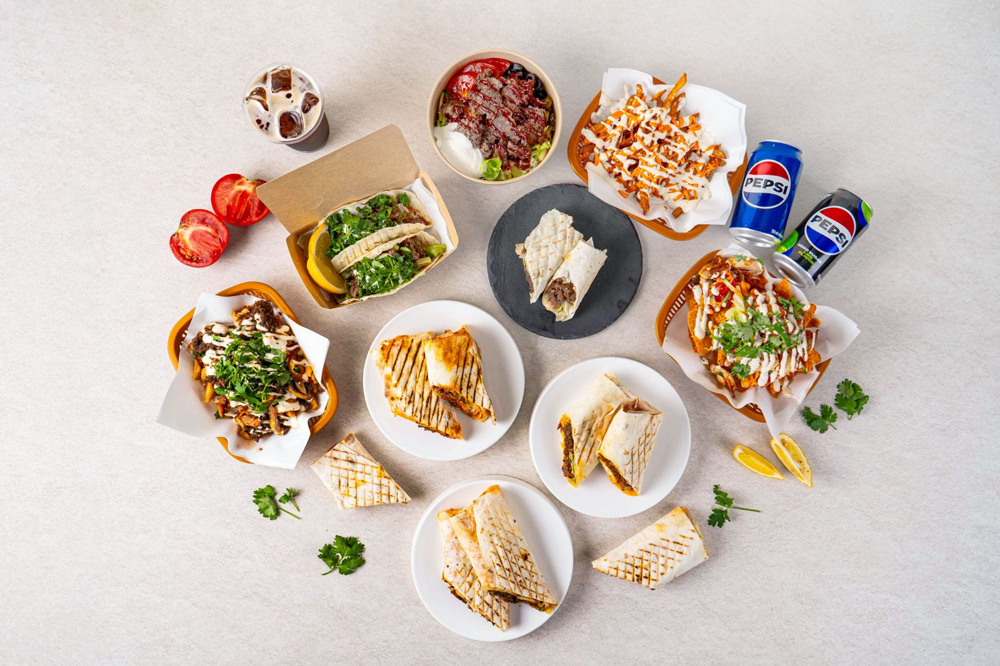
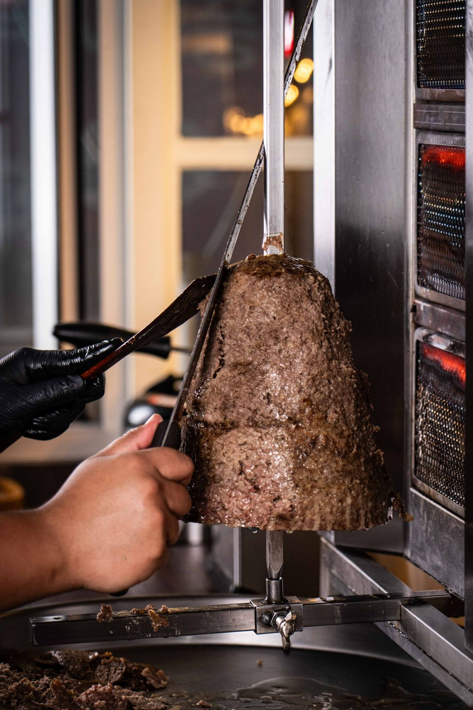
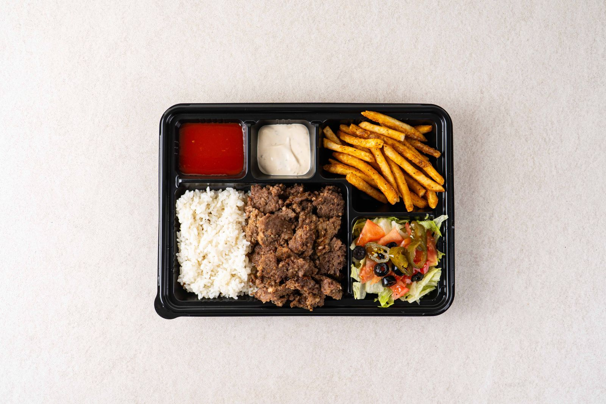
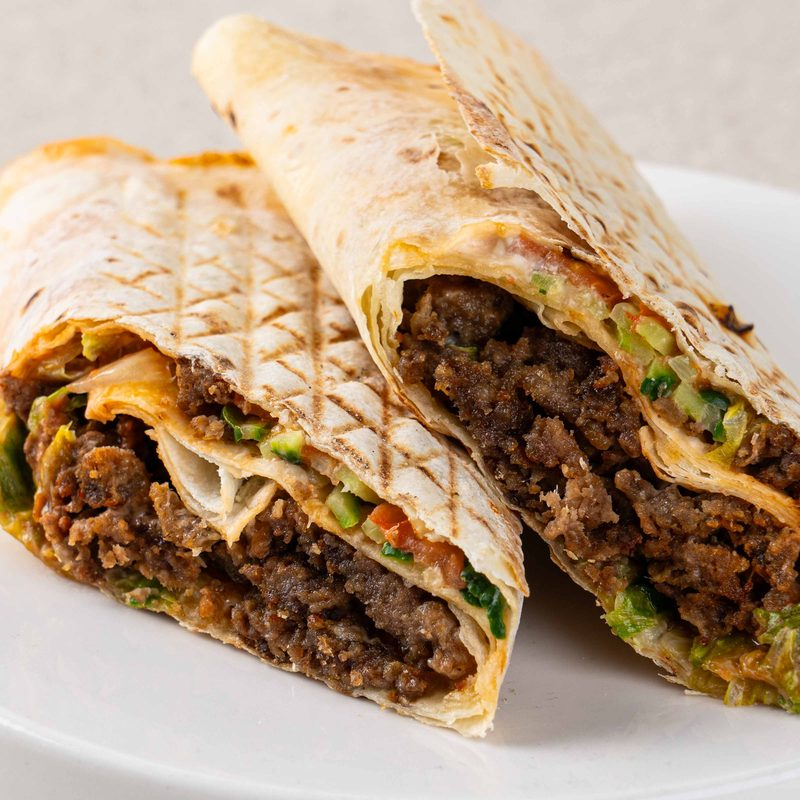
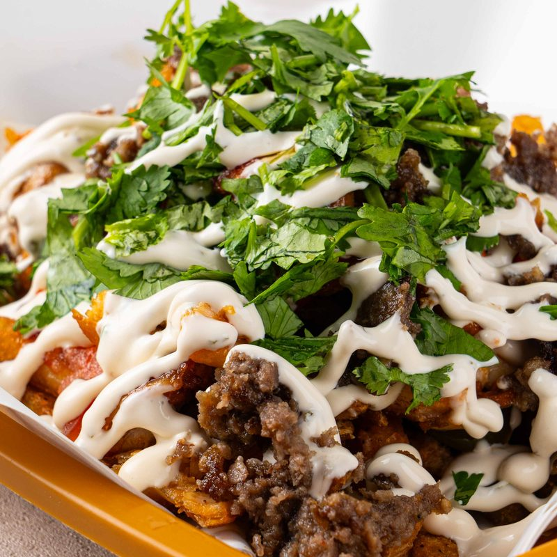
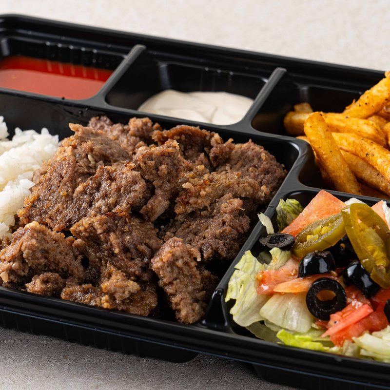
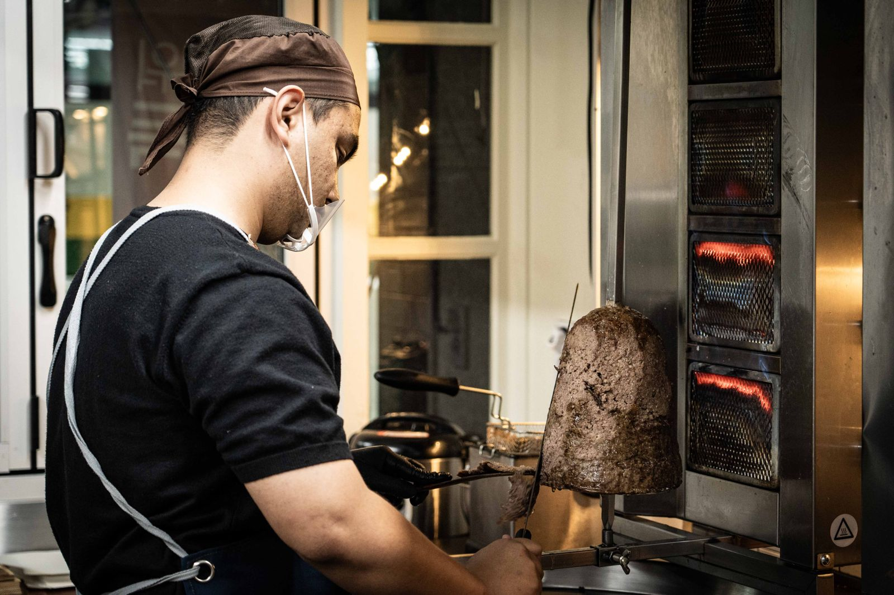

그 짧은 여행을
점심 한 끼에중앙아시아로A short trip,
packed into one lunchto Central Asia
매일의 일상. 비슷한 일과. 나쁠 것 없이 행복한데, 가끔은 어디론가 떠나고 싶을 때가 있습니다.Every day, the same routine. Life is good, nothing wrong with it. But sometimes you just want to get away.
시식 설문 참여하기Take the tasting survey마곡에서 문을 열 준비를 하고 있습니다.We're getting ready to open in Magok, Seoul.



맛 · THE TASTE
현지의 맛은 그대로,
호불호는 줄였습니다The local taste stays.
The hard-to-love parts don't.
중앙아시아의 전통 스트리트 푸드에 한국의 소스를 만나게 했습니다. 고기를 손질하고 굽는 방식, 재료의 구성은 그대로 두고, 처음 드시는 분께 이질적일 수 있는 향신료와 소스만 한국에 맞게 손봤습니다 — 향신료는 바꾸고, 특제 소스를 새로 개발했습니다.We paired a traditional Central Asian street food with Korean sauces. The way we trim and grill the meat and what goes into it stay the same. We only adjusted the spices and sauces that can feel unfamiliar the first time: the spices are changed, and we developed a new house sauce.
-

현지의 맛Local Taste
고기를 손질하고 굽는 방식 · 재료의 구성How the meat is trimmed and grilled · What goes into it
-

한국 소스Korean Sauce
향신료는 바꾸고 · 특제 소스는 새로 개발The spices, changed · A new house sauce
-

쌀 케밥Rice Kebab
쌀로 먹는 케밥A kebab you eat with rice
그대로 둔 것Kept as it was
- 고기를 손질하고 굽는 방식How the meat is trimmed and grilled
- 재료의 구성What goes into it
한국에 맞게 손본 것Adjusted for Korea
- 향신료는 바꾸고The spices, changed
- 특제 소스는 새로 개발A new house sauce
- 쌀로 먹는 케밥A kebab you eat with rice
현지의 맛은 그대로 즐기면서 호불호는 줄였습니다. 혹시 향과 소스가 강해서 케밥을 못 드셨던 분이라면, 이참에 한번 시도해 보셔도 좋습니다.You still get the local taste, with far fewer love-it-or-hate-it moments. If strong aromas and sauces have kept you away from kebabs, this could be a good time to try one.
그리고 여태 케밥과는 다르게, 한국 정서에 맞게 한 끼 식사가 되도록 쌀로 먹는 케밥도 새로 만들었습니다.And unlike the kebabs you may know, we made a new kebab you eat with rice, so it's a full meal the Korean way.
이름의 뜻 · THE NAME
원조 할매Wonjo Halmae
The Original Grandma“the original grandma”
한국에서 「원조 할매」는 한자리에서 오래도록 같은 맛을 내 온, 역사 깊은 맛집을 부르는 말입니다.In Korea, “Wonjo Halmae” is what people call a long-loved restaurant that has served the same taste in the same spot for years.
우리 원조할매케밥도 우리가 살던 중앙아시아에서 오랜 시간 같은 맛을 내던 현지 케밥의 맛과 분위기를 그대로 옮겨왔습니다.Wonjo Halmae Kebab brings over, just as it was, the taste and mood of a local kebab that served the same flavor for a long time in Central Asia, where we lived.

고향의 맛을 못 찾아,
직접 굽기 시작했습니다He couldn't find the taste of home,
so he started making it
“저는 스무 살에 유학으로 한국에 와 대학을 다녔고, 대학원까지 6년 — 가장 힘들었던 건 외로움이었습니다. 한국에는 재밌는 것도 많고 좋은 친구도 사귈 수 있었지만, 외로움은 어쩔 수 없었습니다.“I came to Korea at twenty to study. Through university and graduate school, six years in all, the hardest part was loneliness. Korea had plenty of fun things and I made good friends, but the loneliness never went away.
향수를 이겨내려고 이태원·대구·광주·안산까지 고향의 맛을 찾아다녔습니다. 하지만 못 찾아, 직접 굽기 시작했습니다.To beat the homesickness, I went looking for the taste of home in Itaewon, Daegu, Gwangju, even Ansan. I couldn't find it, so I started making it myself.
처음엔 친한 대학 친구들에게 나눠줬고 반응이 좋았습니다. 6년 동안 알바를 하며 만난 사람들에게도 나눠줬고, 맛있게 먹는 모습을 보며 언젠가 꼭 이 맛을 사람들에게 나눠주고 싶다고 생각했습니다. 그다음은 퇴근한 단골들 — 그 반응이 이 케밥의 시작이 됐습니다.”At first I shared it with close friends from university, and they loved it. I shared it with the people I met at part-time jobs over those six years too, and watching them enjoy it, I thought that one day I really wanted to share this taste with everyone. Then came the regulars stopping by after work. Their reaction was the start of this kebab.”
— 이 케밥을 한국에 처음 가져온 로한. 마곡에서는 현지에서 온 주방장이 그 방식대로 굽습니다.— Rohan, who first brought this kebab to Korea. In Magok, a chef from Central Asia grills it the same way.
먼저 드신 분들은 · FROM OUR GUESTS
“…터키,중동에서 먹던 그 케밥맛이 나서 너무 맛있게 잘먹고 있습니다. 한국에 파는 대부분 케밥집들에게서 느끼지 못하는 특유의 그 맛이 있어요.”
배달의민족 리뷰 · 2026-05-13Baemin delivery app review · 2026-05-13
“…It tastes just like the kebab I had in Turkey and the Middle East, so I'm really enjoying it. It has that special taste I don't get from most kebab shops in Korea.” (translated)
오늘 점심 · TODAY'S LUNCH
- 1짧은 여행A short trip점심 한 끼one lunch
- 1걸리는 시간Duration한 시간one hour
- 0걱정Worries내려놓고left behind
오늘도 어제 같은 점심이라면If today's lunch is just like yesterday's
어제는 햄버거, 그제는 샌드위치 — 오늘도 어제 같은 점심이라면, 이번엔 짧은 여행 어떠세요. 한 시간, 마음은 내려놓고 기분은 들뜬 채로 다녀오세요. 원조할매케밥에서 기다리겠습니다.Burger yesterday, sandwich the day before. If today's lunch is going to be just like yesterday's, how about a short trip this time? One hour: put your mind at ease and come back in a lighter mood. We'll be waiting at Wonjo Halmae Kebab.
설문 끝에서 마곡 개점 알림을 신청하실 수 있습니다.At the end of the survey, you can sign up to hear when we open in Magok.